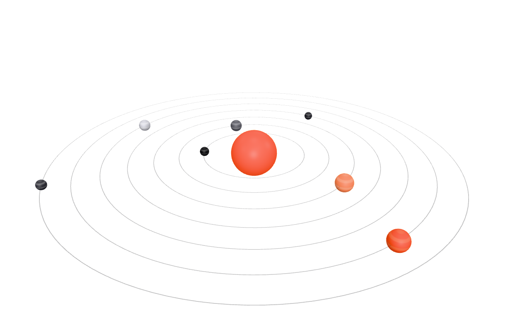
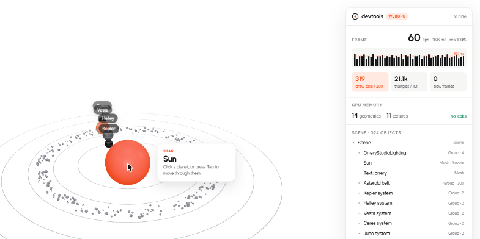
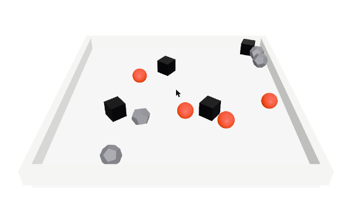

Start · Introduction
Batteries for three.js
Orrery is a small layer on three.js. It lights your scene, frees GPU memory when you remove things, gives objects click events and runs on WebGPU with a WebGL fallback. three stays a peer dependency, so you keep using it directly.
npm i @orreryjs/core three
# optional packages
npm i @orreryjs/devtools @orreryjs/physics
npm i @orreryjs/ui @orreryjs/ecs @orreryjs/react
Orrery is an independent project and is not affiliated with three.js. All credit for three.js goes to mrdoob and its contributors.
Start · Quick start
Quick start
Start a new project with the starter, or add Orrery to an existing one.
npm create @orreryjs@latest my-world
cd my-world && npm install && npm run devBy hand
import { BoxGeometry, Mesh, MeshStandardMaterial } from 'three';
import { World } from '@orreryjs/core';
const world = await World.create( { container: document.querySelector( '#app' ) } );
const cube = new Mesh( new BoxGeometry(), new MeshStandardMaterial( { color: 0xff4f1a } ) );
world.add( cube );
world.on( cube, 'click', () => world.remove( cube ) ); // also frees its GPU memory
world.onUpdate( ( dt ) => { cube.rotation.y += dt; } );
world.start();Start · World
World
The scene, camera, renderer and loop in one object, lit by default, on WebGPU when the browser has it.
Create a world
await World.create() uses three's WebGPURenderer, which falls back to a WebGL 2 backend on its own. new World() gives you the classic WebGLRenderer synchronously. world.backend tells you which is drawing.
Options
| Option | Values | What it does |
|---|---|---|
| renderer | 'auto' · 'webgl2' · 'webgl' | Which GPU path World.create uses. |
| lights | 'studio' · 'none' | A soft studio rig so lit materials are never black. |
| environment | 'room' · 'none' | Image-based lighting from three's RoomEnvironment. |
| toneMapping | true | Neutral tone mapping and sRGB output. Whites stay white. |
| adaptive | false · true · { min, max, budgetMs } | Lowers resolution when frames run over budget, raises it back with headroom. |
| recover | true | Rebuilds on the WebGL 2 backend if the WebGPU device is lost. |
| warnings | true | Console hints, such as a scene with lit materials and no light. |
Adding and removing
world.add(...objects) adds to the scene. world.remove(object) detaches it and disposes its geometry, materials and textures, which is the leak plain scene.remove() leaves behind.
Events
world.on(object, type, fn) with click, pointerenter, pointerleave, pointerdown or pointerup. Handlers on a parent fire for its children, the nearest object wins, and the cursor turns into a pointer over clickable things. world.emit() fires one by hand.
Start · Loading assets
Loading assets
One call for every file. The extension picks the loader; decoders are pinned to your three version.
const city = await world.load( 'city.glb' ); // Draco, KTX2 and Meshopt ready
world.add( city.scene );
world.assets.onProgress( ( { loaded, total } ) => bar.style.width = `${ loaded / total * 100 }%` );| Extension | Result | |
|---|---|---|
| .glb .gltf | glTF | Draco, KTX2 and Meshopt wired in. |
| .ktx2 | CompressedTexture | Basis transcoded to what the GPU supports. |
| .hdr | DataTexture | Equirectangular HDR. |
| .png .jpg .webp .avif | Texture | Colour textures, already sRGB. |
Loads are cached by URL, and a failed load is dropped from the cache so it can be retried.
Packages · @orreryjs/devtools
Devtools
import { mountDevtools } from '@orreryjs/devtools';
mountDevtools( world, { budgets: { drawCalls: 200 } } );
// ` toggles, Alt+click selects
A frame graph with a budget line, draw call and triangle budgets, slow-frame count, GPU memory with a leak check (geometries that left the scene without dispose()), a live scene tree and an inspector for position, rotation and scale.
Packages · @orreryjs/physics
Physics
const physics = await addPhysics( world );
physics.add( floor, { type: 'fixed' } );
physics.add( crate );
physics.onCollision( crate, ( other, started ) => {} );
physics.applyImpulse( crate, [ 0, 6, 0 ] );
Rapier, loaded on first use. Colliders come from each mesh's geometry: a ball for spheres, a cuboid for boxes and planes, a capsule for capsules, exact triangles for fixed meshes and a convex hull for moving ones. Bodies leave with their object.
Packages · @orreryjs/ui
UI and keyboard
const ui = createUI( world );
ui.pin( planet, 'Juno', { fade: { near: 14, far: 30 }, occlude: true } );
ui.accessible( planet, 'Juno' ); // Tab reaches it, Enter fires its click handler
world.add( ui.text( 'orrery' ) );Pins are real DOM: sharp at any zoom, readable by screen readers, sorted by depth and dimmed when something is in front. ui.accessible puts 3D objects in the Tab order with a visible focus ring.
Packages · @orreryjs/ecs
ECS
const ecs = createECS( world );
const Spin = ecs.trait( { speed: 1 }, 'Spin' );
ecs.add( planet, Spin( { speed: 0.4 } ) );
ecs.system( ( dt ) => { for ( const [ o, s ] of ecs.each( Spin ) ) o.rotation.y += s.speed * dt; } );Optional. Entities are your Object3Ds, queries are cached and live (with Not()), systems run in order with timings, and entities drop out when their object leaves the scene.
Packages · @orreryjs/react
React
import { OrreryCanvas, useWorld, useFrame } from '@orreryjs/react';
function Spinner() {
const world = useWorld();
const cube = useMemo( () => new Mesh( new BoxGeometry(), new MeshStandardMaterial() ), [] );
useObject( cube ); // added on mount, removed and freed on unmount
useFrame( ( dt ) => { cube.rotation.y += dt; } );
return null;
}
<OrreryCanvas style={ { height: 400 } }><Spinner /></OrreryCanvas>A thin binding: you write plain three.js inside hooks, and the World handles the rest.
Guides · Performance
Performance
world.optimize(root) folds meshes that share geometry and material into one InstancedMesh each. In the demo, 300 asteroids go from 276 draw calls to 18. Meshes with pointer events are left alone. adaptive: true trades resolution for frame rate. Devtools shows draw calls, triangles and frame time against your budgets.
Guides · Upgrading three
Upgrading three
npx orreryjs doctor # or --json for CIChecks that three is new enough, that there is only one copy installed, that every three/addons import in your code still exists (with the replacement for renamed ones, such as RGBELoader to HDRLoader), that @types/three matches, and that Orrery packages are aligned. Add // orreryjs-doctor-ignore-file to skip a file.
Guides · GPU loss
GPU loss
Drivers sometimes reset the GPU. With World.create(), a lost WebGPU device is replaced by the WebGL 2 backend and the scene keeps running; world.onRendererChange(fn) fires on the swap and world.onGpuLost(fn) reports the loss. Pass recover: false to handle it yourself.